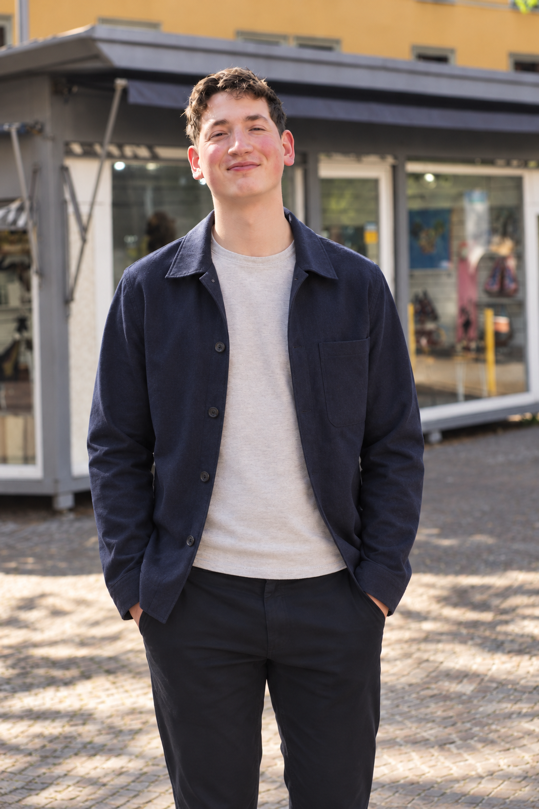
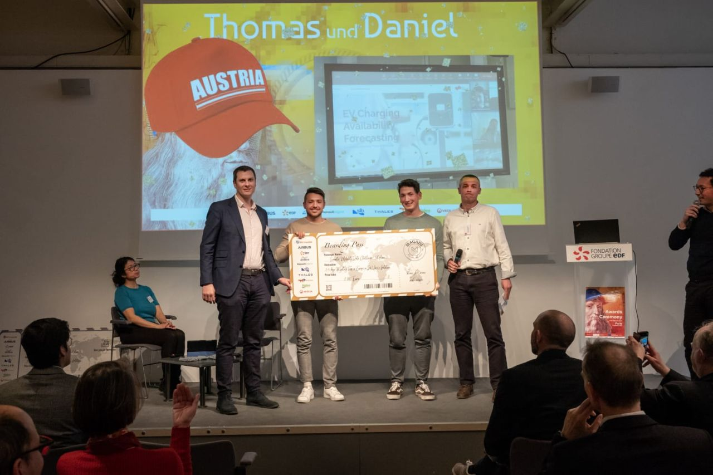
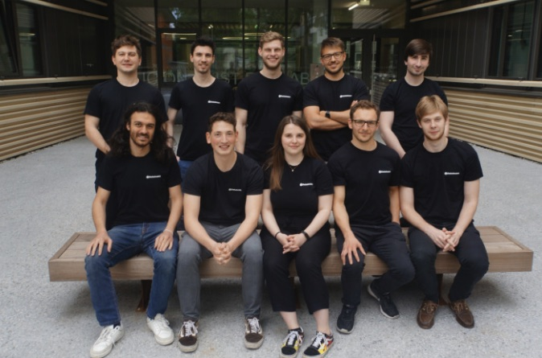

Hello, I’m Daniel.
I’m a data scientist based in Copenhagen, currently working as a Data Science Consultant at FELD M. I hold an MSc in Computer Science from Graz University of Technology, where I graduated with distinction.
I’ve worked on a variety of machine learning problems, both in academic research and industry, ranging from medical applications and computer vision to causal inference and advanced analytics. My primary research interests lie in understanding how machine learning models work - particularly how models represent knowledge, reason, and behave.
Outside of work, I enjoy volleyball, kickboxing, traveling, and the occasional machine learning competition.

Selected highlights
- 20231st place — Smarter Mobility Data Challenge, Paris
- 20231st place — LEC Data Challenge
- 20244th place — ThinkOnward Power Patterns challenge
- Kaggle36/1,178 teams in Lux AI; 40/1,610 in Coleridge Initiative


Research interests
My research interests center on understanding how machine learning models work, what they learn, and why they behave the way they do. I am particularly interested in interpretability, model evaluation, knowledge and reasoning, and generalization.
I am especially drawn to discovery-driven empirical work: experiments that reveal something unexpected about what a model has learned, how it reasons, or where its explanations fail.
More about research →Background
- 2026–PresentData Science Consultant, FELD M
- 2026Visiting Researcher, University of Copenhagen
- 2024–2025Research Assistant, TU Graz
- 2023–2025Teaching Assistant, TU Graz
- 2020–2022AI Software Developer, Micardo / Meero
- 2019–2020Working Student & Intern, NXP Semiconductors
Reading & notes
I often come across interesting papers, lectures, talks, and courses that I want to revisit but eventually lose track of. This is my attempt to keep a record of the things I’ve explored and found particularly worthwhile, along with occasional notes and reflections.
Visit the notebook →Contact
If you'd like to get in touch, feel free to send me an email.
Email: daniel.hebenstreit1@gmail.com
You can also find me on LinkedIn.